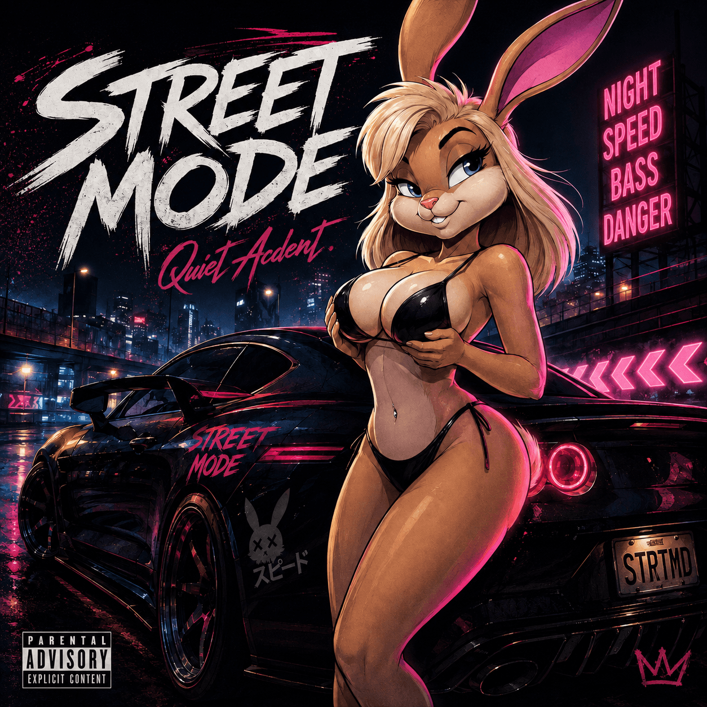

QUIET ACCIDENTSTREET MODESINGLE / 2026 · ARTWORK PENDING

Quiet Accident / Single
STREET MODE
Released
Step into the after-dark world of Quiet Accident. STREET MODE is out now.

Quiet Accident / Single
Released
Step into the after-dark world of Quiet Accident. STREET MODE is out now.
Official video
Quiet Accident · Single · 2 October 2026
Molotko Media Group